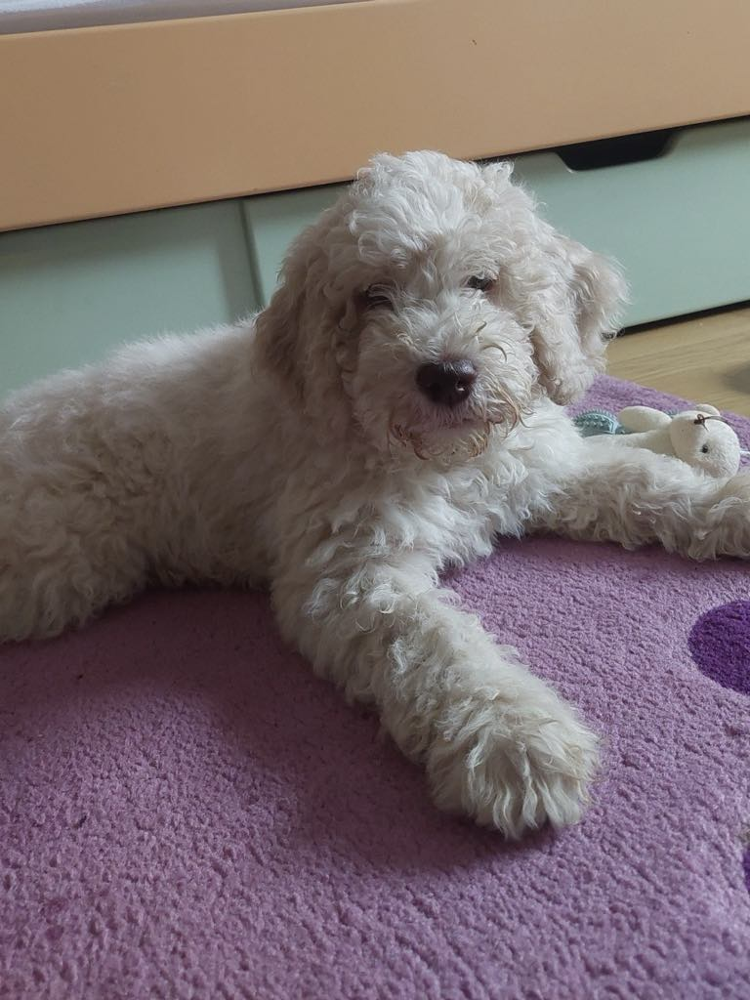
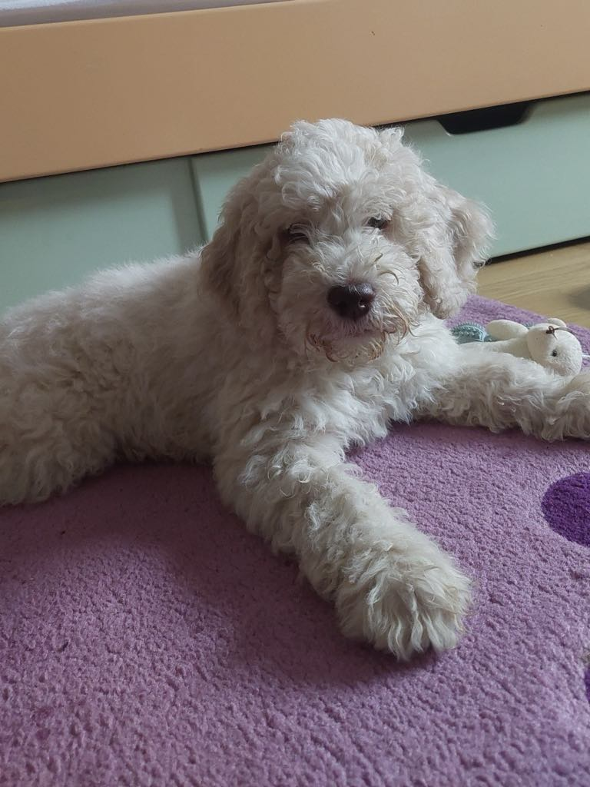

Otto
Lagotto Romagnolo
Otto е моето машко куче кое има 5 месеци и е многу хиперактивен. Моментално го тренирам да не скока по луѓе, затоа што е многу друштвен и сака со сите да се запознае. Многу сака да седи во скут и да се гушка. Уште малку ќе оди на шишање за да може да ги поднесе овие летни жештини.
 
